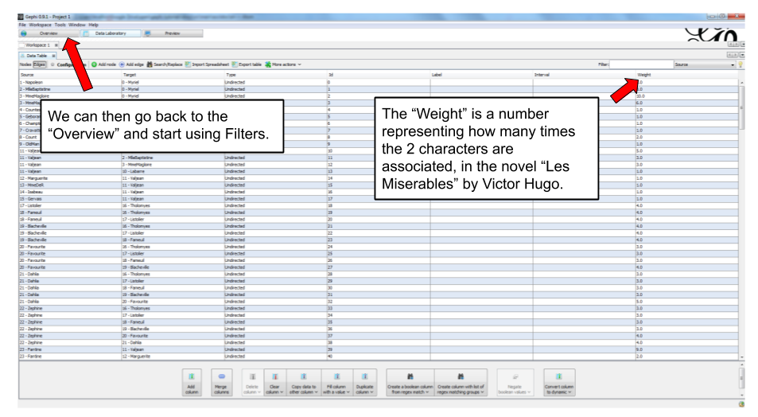
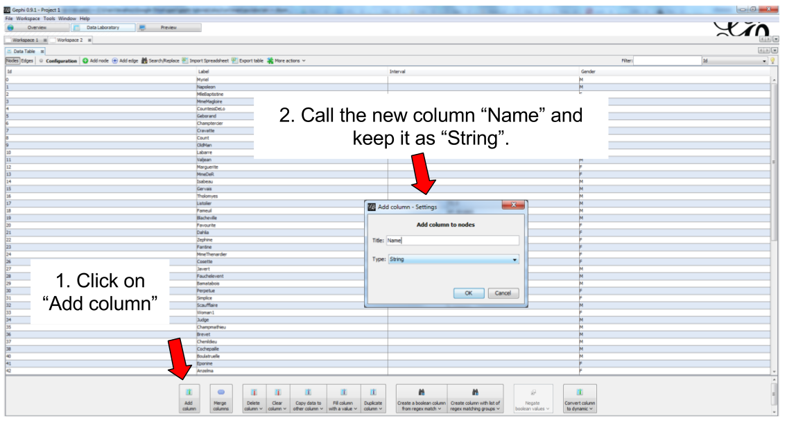
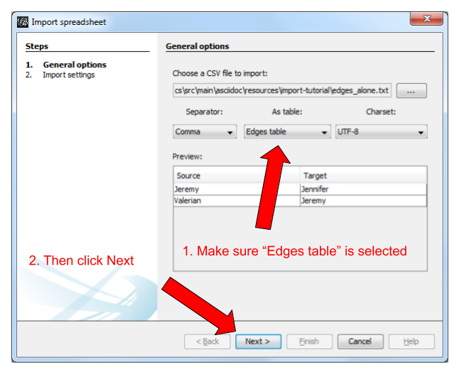
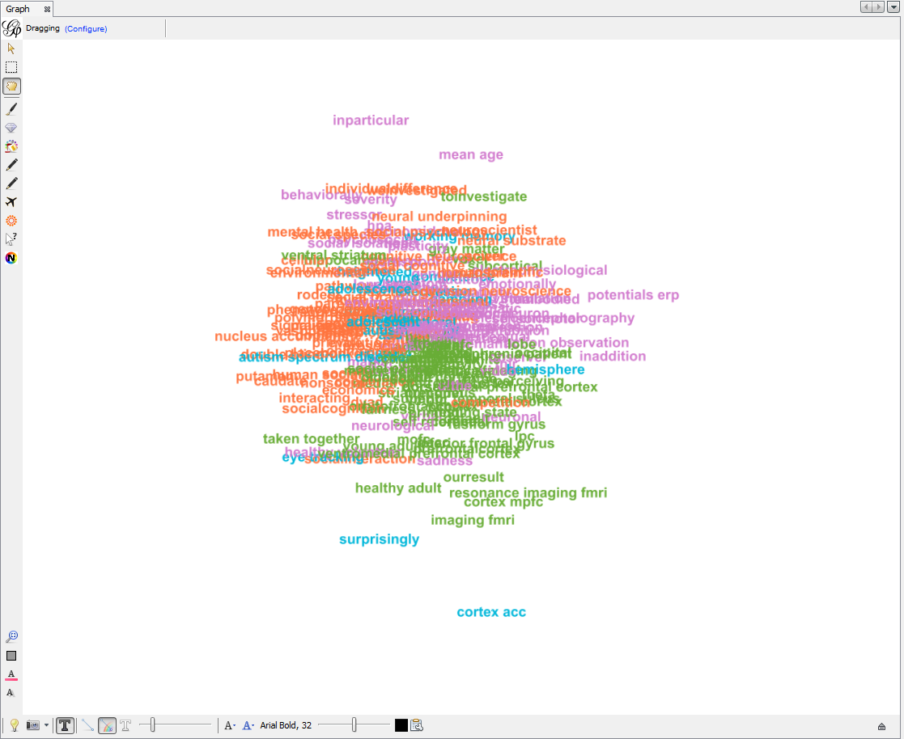
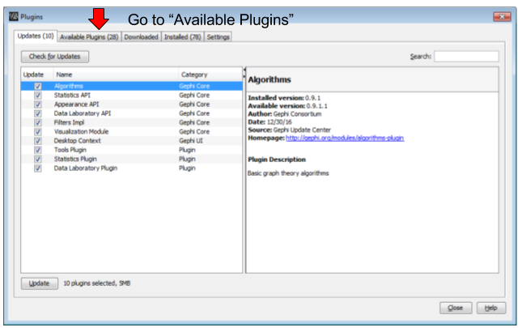
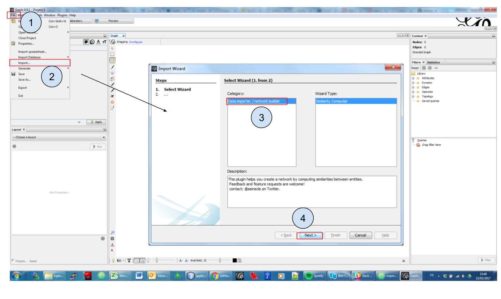
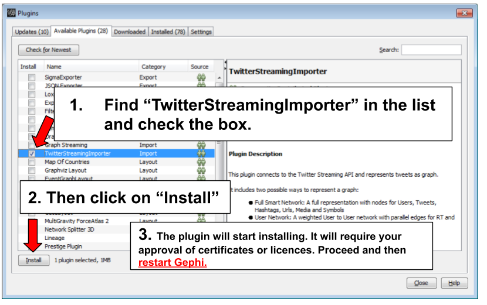
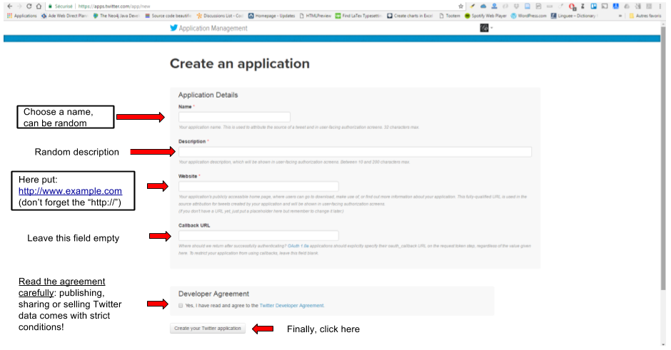
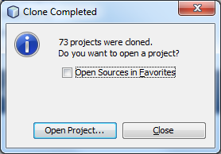
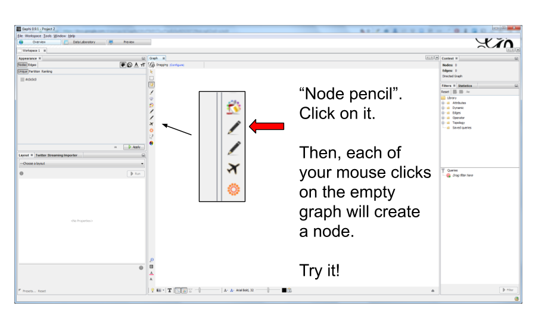

L.*Gephi
the documentation
2017-03-14
last modified: 2017-03-27
What is Gephi?
the leading software to visualize networks on Linux, Windows and Apple computers
more than 2 million downloads,
used by analysts, academics, journalists,
stable on Windows, Mac and Linux,
in continuous development
open source & free (including for commercial purposes)
Gephi adopts a licencing model which makes it free to use, sell, or include the source code of Gephi in larger applications.
Developers who modify the Gephi code base are required to make these changes public, to benefit the community.
"PhotoshopTM for graphs"
for networks of all types (social, semantic, biological, etc.)
attributes and properties of the network are made visible: not just the topology of the network.
Gephi provides functions to explore the network: pan, filter, zoom, colorize, label, etc.
measures and metrics can be computed, and then rendered visually.
committed to quality and performance
Gephi won a Duke Award in 2010. Duke awards "recognize and honor extreme innovation in the world of Java technology".
Gephi evolved importantly since 2006 to adopt new, best performing techs for the visualization of very large graphs on the desktop
The code base of Gephi is maintained with the best standards to insure a a stable application, ease of maintainance and modularity / extensibility.
modular and extensible
Gephi is "cut" in a large number of modules, each providing a specific function. This makes it easier to maintain and evolve the software, by working on independent parts.
Since version 0.9 the "graph store" of Gephi has become a completely independent module: it can be reused by another software.
Anybody can create new modules for Gephi! They are called "plugins". They integrate with Gephi seamlessly.
created, maintained and documented by volunteers, for the community.
Gephi itself is open source and free
The Gephi Consortium was created to ensure Gephi will remain so
The original contributors and their followers are volunteers
The support to users through forums, discussion groups and documents is provided for free.
History of Gephi
2006 and Web Atlas
The origin of Gephi lays in Web Atlas, a project started in 2006 involving Mathieu Jacomy, who was interested in the exploration of web-based graphs. This was about the same time Eytan Adar was developing his GUESS software

Figure 1. Mathieu Jacomy
In 2007/2008, this project morphed into Gephi, developed by a team of students at Université Technologique de Compiègne (UTC).

Figure 2. The initial Gephi team
A series of metrics on Gephi’s popularity over time
Gephi has evolved in several major milestones:
version 0.6 (2009): the initial public release. Contains already the filter system.
version 0.7 (2010): Major overhaul of the graphics interface. Started using OpenGL framework for graphics acceleration. A system of plugin is created.
version 0.8 (2011): Introduced dynamic graphs.
2011 to 2016: Many plugins were created for Gephi, and the software sarted becoming much popular.
Mac computer users had issues installing Gephi on their computers because of a Java compatibility issue.
version 0.9 (December 2015):
A graph engine optimized for memory is introduced: Gephi can handle much larger graphs.
The codebase for the project is "mavenized", making the code more modular and easier to maintain.
Compatibility issues with Mac OS are solved.
In 2016, Gephi is translated in French, Spanish, Japanese, Russian, Polish, Brazilian Portuguese, Chinese, Czech and German.

Figure 3.
Simple Gephi Project from A to Z
Description of the project
This project is for complete beginners to Gephi. It supposes you have Gephi installed and running on your computer. That is all.
When finishing this tutorial, you should be able to:
be familiar with the vocabulary to discuss networks
download a network file for this exercise
description of the file / the network
open a network file
read the report after opening a file
show the labels of the nodes
layout the network
visualize attributes of the network
prettify the network for enhanced readability
compute the centrality of the nodes in the network
visualize attributes created by Gephi
export a visualization as a picture or pdf
be familiar with the terminology to discuss networks

Figure 4. terminology for networks
download a network file
download this zip file and unzip it on your computer.
You should find the file miserables.gexf in it.
Save it in a folder you will remember (or create a folder specially for this small project).
description of the file / the network
This file contains a network representing "who appears next to whom" in the 19th century novel Les Misérables by Victor Hugo[1].
A link between characters A and B means they appeared on the same page or paragraph in the novel.
The file name ends with ".gexf", which just means this is a text file where the network information is stored (name of the characters, their relations, etc.), following some conventions.
open the network in Gephi
open Gephi. On the Welcome screen that appears, click on
Open Graph Filefind
miserables.gexfon your computer and open it

Figure 5. welcome screen
read the report after opening a file
A report window will open, giving you basic info on the network you opened:

Figure 6. report window
This tells you that the network comprises 74 characters, connected by 248 links.
Links are undirected, meaning that if A is connected to B, then it is the same as B connected to A.
The report also tells us the graph is not dynamic: it means there is no evolution or chronology, it won’t "move in time".
Click on OK to see the graph in Gephi.
initial view

Figure 7. initial view when opening a graph
This is how the network appears in Gephi. Not very useful! Let’s examine what we have here.
basic view of Gephi’s interface

Figure 8. the 3 main screens in Gephi
Gephi has 3 main screens:
Overview: where we can explore the graph visually
Data Laboratory: provides an "Excel" table view of the data in network
Preview: where we polish the visualization before exporting it as a pictue or pdf
What we see here is the Overview.

Figure 9. Filters and statistics panels in Gephi
In the Overview, the graph is shown at the center. Around it, several panels help us fine tune the visualization.
"Filters", where we can hide different parts of the network under a variety of conditions
"Statistics", where we can compute metrics on the network

Figure 10. Appearance and layout panels in Gephi
"Appearance", where we can change colors and sizes in interesting ways
"Layouts", where we can apply automated procedures to change the position of the network
Figure 11. 3 groups of icons
A series of icons to add / colorize nodes and links manually, by clicking on them
Options and sliders to change the size of all nodes, links, or labels
More options become visible if we click on this little arrow head pointing up
showing labels of the nodes

Figure 12. showing node labels
layout ("spatialize") the network

Figure 13. selecting the force atlas 2 layout

Figure 14. changing a few parameters and launching the layout

Figure 15. result of Force Atlas 2 layout
visualize the properties of the nodes
A network consists in entities and their relations. This is what we just visualized. Yet, the properties of these entities remain invisible.
For instance: the characters in the novel "Les Misérables" are male or female. Are males more likely to be connected to males, or females? Just looking at the network in Gephi, we can’t tell.
Now, we will see how to make this property ("Gender") visible.

Figure 16. Switching the view to the data laboratory

Figure 17. We see there is a Gender attribute for each character.
We will color the nodes based on their gender. To do that, we select Gender in the Appearance panel:

Figure 18. Coloring nodes according to their gender
The result:

Figure 19. After coloring characters according to their gender
prettify the network for enhanced readability
There are a number of issues with the result we get:
the network is too big or too small, it is hard to read
the labels of the characters overlap
the size of the labels might be too big / small
the links are sometimes too large
Let’s fix these issues.
1. Enlarge or shrink the network
either we use the "scaling" parameter of the layout, as we have seen here.
or the scale is fine, it is just that we need to zoom it or out. Use the scrolling wheel of your mouse, and right click to move the network.
2. Prevent the Labels from overlapping
In the layout panel, choose "Label Adjust" or "Noverlap": these layouts will move the nodes just so that the Labels stop overlapping:

Figure 20. Noverlap or Label Adjust will help you
Don’t forget to click on "Run" to apply these layouts.
3. Changing the size of the labels
Open the bottom panel of Gephi by clicking on tiny arrow head (1). Then select "nodes" (2), then move the slider (3).

Figure 21. Adjusting label size
4. Adjusting the thickness of the links

Figure 22. Adjusting edge thickness
computing the centrality of the nodes
1. Definitions of centrality
"Centrality" is a very good metrics to first get an idea of a network. What does centrality mean? Intuitively, we understand that a "central" node will probably sit in the middle of the network. But how to measure that "scientifically", so that we have an objective confirmation of our visual impression?
There are several ways, all equally interesting.
We can measure degree centrality. "Degree" is the technical term for "number of connections that a node has".
So, degree centrality just means that the most central node is the node which has the most connections. Simple!
Another measure is betweenness centrality. This one is more tricky.
First, you have to imagine what is a
shortest path.A
pathfrom node A to node B is a chain of nodes, the road if you will, that you have to traverse to go from A to B.The
shortest pathfrom A to B is the quickest road from A to B: the path that has the smallest number of nodes between A and B.A node which is on many shortest paths is "between" many nodes. And when you realize it, it is a very intuitive sense of what it means to "be central". These nodes have a high
betweenness centrality.
2. Computing betweenness centrality with Gephi
Gephi computes it for you. Find "Network diameter" in the statistics panel and click "run":

Figure 23. Computing betweenness centrality
This will open a window with parameters (explained in a more advanced tutorials). Click "OK":

Figure 24. Parameters for the computation of betweenness centrality
A report window opens (also explained in a other tutorials). Close it.

Figure 25. Report after the computation of betweenness centrality
Now we can visualize this information.
visualize attributes created by Gephi
Gephi has computed for us the betweenness centrality of all nodes. This remains invisible on the network, however.
It would be interesting to, say, resize the nodes according to their centrality: the more central a node, the bigger. This would allow for a very quick visual appreciation of which nodes are the most central.
First, let’s switch to the data laboratory to see how Gephi stored the "betweenness centrality" of each node:
Figure 26. Switching the view to the data laboratory
When we ran "Network Diameter" in the statistics panel, Gephi has actually computed many kinds of centralities (not just "betweenness centrality"):

Figure 27. Different centrality measures visible in the data laboratory
To resize the nodes according to the value of their betweenness centrality, we use the Appearance panel:
| make sure you select the correct options |

Figure 28. Ranking node sizes by centrality

Figure 29. Selecting the minimum and maximum sizes of nodes

Figure 30. Result of the ranking

Figure 31. Resizing labels to reflect their node’s size

Figure 32. Result of the label resizing
exporting a network as a picture

Figure 33. Open the configuration panel for screenshots
Select the maximum value for anti-aliasing, and multiply values for width and height for higher resolution. For example, resolution x 3 is width = 3072 and height = 2304

Figure 34. The configuration panel for screenshots
Let’s switch to the preview panel:

Figure 35. Switching to the preview panel
The preview panel is dedicated to the preparation of the picture to be exported as a pdf or svg, which are "scalable": in pdf or sv, the resolution of the graph will remain perfect, even with a strong zoom. But as you see, it means the network is now looking different than in the Overview.
| contrary to the Overview panel, here you need to hit the "refresh" button after each parameter change. |

Figure 36. Updating the parameters
Here I change just 2 parameters: Show Labels and Font (which I reduce to size "5"), to get:

Figure 37. Result of preview
Export: just click on the button and select the file format you prefer

Figure 38. Export button
download this zip file if you need to see the network in its final form.
Using filters
download a network file for practice
download this zip file and unzip it on your computer.
or use this direct link: https://tinyurl.com/gephi-tuto-3
You should find the file miserables.gexf in it. Save it in a folder you will remember (or create a folder specially for this small project).
This file contains a network representing "who appears next to whom" in the 19th century novel Les Misérables by Victor Hugo[2].
A link between characters A and B means they appeared on the same page or paragraph in the novel.
The file name ends with ".gexf", which just means this is a text file where the network information is stored (name of the characters, their relations, etc.), following some conventions.
open the network in Gephi
open Gephi. On the Welcome screen that appears, click on
Open Graph Filefind
miserables.gexfon your computer and open it
Figure 39. welcome screen
A report window will open, giving you basic info on the network you opened:
Figure 40. report window
This tells you that the network comprises 74 characters, connected by 248 links.
Links are undirected, meaning that if A is connected to B, then it is the same as B connected to A.
The report also tells us the graph is not dynamic: it means there is no evolution or chronology, it won’t "move in time".
Click on OK to see the graph in Gephi.

Figure 41. The network we will use
getting a sense of the attributes in the data laboratory
We can switch to the data laboratory to see the underlying data:

Figure 42. Switching to the data laboratory
We see that the nodes of the network have many attributes. In particular, each have a Gender and a measure of how central they are:

Figure 43. Nodes attributes.
This is the list of edges (relations) in the network. Notice that they have a "weight" (a "strength").

Figure 44. Edges attributes
discovering the filter panel
In the overview, make sure the Filter panel is displayed:

Figure 45. Making the Filter panel visible.
How the Filter panel works:

Figure 46. Workflow of filters
An example: hiding edges with weight lower than 2

Figure 47. How to use filters.
When you are finished using a filter in the zone, right click on it and select "remove".
combining 2 filters
One filter is applied AFTER this other:
The first filter to be applied is NESTED (placed inside) the second one as a "subfilter"
Which filter should be placed inside which? Let’s look at different examples:
1. Case when the placement of filters makes no difference
Goal: Keeping on screen only the female characters which have a tie (an edge, a relation) of at least strength 2.
→ place the filter "edge weight" inside the filter "Gender":

Figure 48. Filter on the Gender attribute

Figure 49. Filter on edge weight

Figure 50. Keeping only female characters with at least 2 ties
In this case, it was equivalent to:
nest the "Gender" filter inside the "Edge weight" filter or
nest the "Edge weight" filter inside the "Gender" Filter
→ The result was the same (the network on screen is identical in both cases)
2. Case when the placement of filters makes a difference
Here, we want to visualize:
only the nodes which have less than 10 relations <1>
and among these, only those which form the "main island" of the network (we want to hide small detached groups of nodes) <2>
| 1 | in technical terms, nodes with a degree of less than 10. |
| 2 | in technical terms, we are looking for the giant component |

Figure 51. Filter on degree

Figure 52. Filter on giant component
We will see that the placement on the filters in the zone will make a difference.
First, let us place the filter on giant component inside the filter on degree:

Figure 53. Filters in one configuration
In this first case,
only the giant component of the network was made visible.
→ Since the network was just one big connected "island" to start with, it did not change a thing.
then, all characters with more than 10 relations where hidden
→ this hides nodes which were connecting with many others, so that we end up with many groups, disconnected from each others.
Now instead, placing the filter degree inside the filter on giant component:

Figure 54. Same filters in another configuration
In this second case,
starting from the complete network, all characters with more than 10 relations where deleted.
→ this created a network made of many disconnected groups of nodes
then the giant component filter is applied,
→ which had for effect to hide small groups, to keep in view only the biggest group of connected nodes.
| In summary: be careful how you apply several filters at once, this might have an effect on the logic of filtering. |
filter operators
1. The MASK operator
Imagine you are interested in the female characters of the novel "Les Miserables".
you are interested in female characters and the relations among them
you are interested in the relations between female characters and male characters
you are not interested in the relations between male characters
How to display this?
The MASK operator applied on the gender partition filter enables you to:
show all characters
relations between female characters
and relations between male and female characters
but masking male-male relations

Figure 55. Using the MASK operator
It is also possible to hide / show only some of the directed relations between the visible graph and the filtered out graph:

Figure 56. Parameters of the MASK operator
2. The UNION operator
Imagine you are interested in the characters with names starting with "L" or "J" in "Les Miserables".
How to display only these characters?
We will need to apply filters on the Label of the nodes, which contains the names of the characters.
However, looking at the "catalogue" of filters, we see no filter on Label. The reason is that Label is an internal property of nodes, inaccessible to filters.
So we must first copy the Labels of the nodes in a new attribute, which we will be able to apply a filter on.
Let’s switch to the data laboratory and add this attribute:

Figure 57. Adding a column for Names

Figure 58. Copying to this new column
We now have an attribute called "Name" that we can find in the Filters:

Figure 59. New filter available
This is how the filter on Name and its parameters look like in the zone:

Figure 60. Name Filter
To recall, we want to show only the characters which name start with "L" or "J". Let’s start with the "L" characters.
We need to find the names which match the pattern Start with an L. The way to describe a pattern in text is called a "regular expression".
Said differently, a regular expressions (also called "regex") is a convenient way to express a pattern we search for in a text.
Regular expressions can become very sophisticated. But here, we need just a simple one:
Let’s examine what the L, the dot and the star mean.
the letter "L" means we want names starting with this first letter
. the dot means: any character
* the star means: the previous character, repeated any time.
So: "select nodes which have a name starting with L, followed by any character, in any number"
Please note that you need to check the box "regex":

Figure 61. Using a regular expression in a filter
When the filter is applied, only the characters wit a name starting with L will be displayed:

Figure 62. Using a regular expression in a filter
How to filter characters with a name starting with the letter "L" or "J"?
We could rely on a more complex regular expression to do this:
[LJ].*Meaning: "select nodes which have a name starting with L or J, followed by any characters"
But we can also rely on 2 filters: one for L, one for J. Nesting one inside another would not work, it would mean:
"show nodes which start with an L, and among them, only those which start with a J"
→ no node can meet this condition, so they would all be invisible.
Instead, we should use the UNION operator that can be found here:

Figure 63. The UNION operator in filters
Drag it to the zone, and then drag inside it twice the Attributes → Equal → Name filter:

Figure 64. The UNION operator and 2 subfilters
In the settings of the first Name filter, put the regular expression:
L.*In the second Name filter, put:
J.*(make sure the "regex" box is checked in both cases)
As a result, the nodes selected by both filters are added up in the display:

Figure 65. The UNION operator and 2 subfilters
3. The NOT operator
The NOT operator flips the result of a filter: what was hidden becomes visible and vice and versa.
Example: if we want to display all characters except for those returned by a UNION on 2 Name filters on L and J initials:

Figure 66. The NOT nodes operator - 1
Same effect, but applying the NOT operator on single filter using a regex on L or J:

Figure 67. The NOT nodes operator - 2
Same effect again, achieved without using the NOT operator. In regular expressions the ^ sign inside square brackets means "NOT":
[^LJ].*
Figure 68. Achieving a NOT effect with regex
Tutorials about regular expressions:
And a web page where you can test your regular expressions: http://regexpal.com
more tutorials on using filters in Gephi
Importing csv data in Gephi
Importing an existing network file
Gephi handles the import of network files in a variety of formats:

Figure 69. file formats supported by Gephi. Source: gephi.org
To import any of these files, just choose the File → Open menu
Importing nodes with labels and their relations: simplest version
(looking for the complete, full featured csv import version? skip to here.)
The easiest is probably to just have a text file like this one:
Source,Target (1)
Jeremy,Jennifer
Valerian,Jeremy| 1 | This line is mandatory. Don’t put a space between the comma and "Target" |
Just write this in a text editor and save it as a file example.txt
To import this file in Gephi, go to File→Import Spreadsheet. Then in the window:

Figure 70. Importing nodes with labels and their relations
In this window, make sure the box "Create missing nodes" is checked:

Figure 71. Second screen
Let’s look again at the simple text file we used:
Source,Target Jeremy,Jennifer Valerian,Jeremy
There are 2 issues and several missing features, listed below:
1. labels containing commas in them will not work.
Imagine our characters have first names and last names separated by a comma:
Dubois, Jeremy
Rodriguez, Valerian
This will look like:
Source,Target Dubois, Jeremy,Jeremy,Jennifer Rodriguez, Valerian,Dubois, Jeremy
Note that we have 3 commas per line, instead of one! In this mess, Gephi will not detect where the node labels start and end. The import will break.
The proper solution is to put node labels inside double quotes:
Source,Target "Dubois, Jeremy","Jeremy,Jennifer" "Rodriguez, Valerian","Dubois, Jeremy"
Be careful to use these straight " " double quotes, not the curvy ones: “ ” which French keyboards sometimes have.
2. labels containing double quotes " " in them will not work.
Example: let’s imagine that one of our characters has a middle name: Jeremy "Danger" Dubois. Our text file will look like:
Source,Target "Dubois, Jeremy "Danger"","Jeremy,Jennifer" "Rodriguez, Valerian","Dubois, Jeremy "Danger""
These extra " " will make the Gephi import break:

Figure 72. The import bugs - the middle name has disappeared
The solution consists in adding an extra double quote in front of the double quotes. Our text file will look like:
Source,Target "Dubois, Jeremy ""Danger""","Jeremy,Jennifer" "Rodriguez, Valerian","Dubois, Jeremy ""Danger"""
This time, Gephi imports the network correctly:

Figure 73. Importing node labels containing double quotes
Importing more than labels: nodes and edges attributes
To import attributes we will need to proceed differently.
We need 2 text files: one for the list of nodes, one for the list of relations (edges)
An example file with a list of nodes:
Id,Label,Date of Birth,Place of Birth,Years of experience,Rating (1) 3,"Dubois, Jeremy ""Danger""",17/09/1980,"Paris",8,9.27 1,"Jeremy,Jennifer",25/03/1978,"Tampa",8,4.34 45,"Rodriguez, Valerian",30/04/1985,"Berlin",5,6.66
| 1 | Nodes must have at least an Id and a Label. Don’t put spaces after the commas |
An example file with a list of edges:
Source,Target,Weight,Type,Where first met (1) 1,45,3,"undirected",London (2)
| 1 | Edges must have at least a Source and Target. Other fields are optional. |
| 2 | "undirected", the alternative is "directed". Directed edges have arrow heads. |
Let’s import the list of nodes first. File → Import Spreadsheet

Figure 74. Importing a list of nodes with attributes
in the next screen, we must be careful with a couple of things:

Figure 75. The attributes of the nodes
Then we can import the file with the list of relations. File → Import Spreadsheet

Figure 76. Importing a list of edges with attributes

Figure 77. The attributes of the edges
Memo card
Nodes
header must be at least
Id,Label
Edges
header must be at least
Source,TargetTo have an attribute for the "thickness" or "strength" of a relation, this attribute must be called "Weight".
Want arrows on your links? Add an attribute "Type", with value "Directed"
Don’t wan’t arrows? Add an attribute "Type", with value "Undirected"
Types of attributes: which to choose?

Figure 78. Kinds of attributes
Textual attribute:
String. Nodes sharing the same textual value can be colored the same, or filtered together…Numerical attribute:
Integer,DoubleorFloat. Nodes can be resized according to their value, or colorized in a gradient. Filters can be applied based on the range of values.Boolean attribute: just a
trueorfalsevalue. Useful for filtering out some nodes which are true or false on some parameter.Other types of attributes: not needed for the moment.
(to be continued)
More tutorials on importing data to Gephi
Working with text in Gephi
Presentation of this tutorial
This tutorial explains how to draw "semantic networks" like this one:

Figure 79. a semantic network
We call "semantic network" a visualization where textual items (words, expressions) are connected to each others, like above.
We will see in turn:
why are semantic networks interesting
how to create a semantic network
tips and tricks to visualize semantic networks in the best possible way in Gephi
Why semantic networks?
A text, or many texts, can be hard to summarize.
Drawing a semantic network highlights what are the most frequent terms, how they relate to each other, and reveal the different groups or "clusters" they form.
Often, a cluster of terms characterizes a topic. Hence, converting a text into a semantic network helps detecting topics in the text, from micro-topics to the general themes discussed in the documents.
Semantic networks are regular networks, where:
nodes are words ("USA") or groups of words ("United States of America")
relations are, usually, signifying co-occurrences: two words are connected if they appear in the same document, or in the same paragraph, or same sentence… you decide.
It means that if you have a textual network, you can visualize it with Gephi just like any other network.
Yet, not everything is the same, and this tutorial provides tips and tricks on why textual data can be a bit different than other data.
Choosing what a "term" is in a semantic network
The starting point can be: a term is a single word. So in this sentence, we would have 7 terms:
My sister lives in the United States (7 words -> 7 terms)
This means that each single term is a meaningful semantic unit.
This approach is simple but not great. Look again at the sentence:
My sister lives in the United States
My,in,theare frequent terms which have no special significance: they should probably be discardedUnitedandStatesare meaningful separately, but here they should probably be considered together:United Stateslivesis the conjugated form of the verbto live. In a network, it would make sense to regrouplive,livesandlivedas one single node.
Analysts, facing each of these issues, have imagined several solutions:
1. Removing "stopwords"
To remove these little terms without informational value, the most basic approach is to keep a list of them, and remove any word from the text which belongs to this list.
You can find a list of these useless terms in many languages, called "stopwords", on this website.
2. Considering "n-grams"
So, United States should probably be a meaningful unit, not just United and States.
Because United States is composed of 2 terms, it is called a "bi-gram".
Trigrams are interesting as well obviously (eg, chocolate ice cream).
People often stop there, but quadrigrams can be meaningful as well, if less frequent: United States of America, functional magnetic resonance imaging, The New York Times, etc.
Many tools exist to extract n-grams from texts, for example these programs which are under a free license.
2 bis. Considering "noun phrases"
Another approach to go beyond single word terms (United, States) takes a different approach than n-grams. It says:
"delete all in the text except for groups of words made of nouns and adjectives, ending by a noun"
→ (these are called, a bit improperly, "noun phrases")
Take United States: it is a noun (States) preceded by an adjective (United). It will be considered as a valid term.
This approach is interesting (implemented for example in the software Vosviewer), but it has drawbacks:
you need to detect adjectives and nouns in your text. This is language dependent (French put adjectives after nouns, for instance), and the processing is slow for large corpora.
what about verbs, and noun phrases comprising non adjectives, such as "United States of America"? These are not going to be included in the network.
3. Stemming and lemmatization
live, lives, lived: in a semantic network, it is probably useless to have 3 nodes, one for each of these 3 forms of the same root.
Stemming consists in chopping the end of the words, so that here, we would have only
live.Lemmatization is the same, but in a more subtle way: it takes grammar into account. So, "good" and better" would be reduced to "good" because there is the same basic semantic unit behind these two words, even if their lettering differ completely.
A tool performing lemmatization is TextGrid. It has many functions for textual analysis, and lemmatization is explained there.
Should we represent all terms in a semantic network?
We have seen that some words are more interesting than others in a corpus:
stopwords should be removed,
some varieties of words (
lived,lives) could be grouped together (live).sequences of words (
baby phone) can be added because they mean more than their words taken separately (baby,phone)
Once this is done, we have transformed the text into plenty of words to represent. Should they all be included in the network?
Imagine we have a word appearing just once, in a single footnote of a text long of 2,000 pages. Should this word appear? Probably not.
Which rule to apply to keep or leave out a word?
1. Start with: how many words can fit in your visualization?
A starting point can be the number of words you would like to see on a visualization. A ball park figure is 300 words max:
it already fills in all the space of a computer screen.
300 words provides enough information to allow micro-topics of a text to be distinguished
More words can be crammed in a visualization, but in this case the viewer would have to take time zooming in and out, panning to explore the visualization. The viewer transforms into an analyst, instead of a regular reader.
2. Representing only the most frequent terms
If ~ 300 words would fit in the visualization of the network, and the text you start with contains 5,000 different words: which 300 words should be selected?
To visualize the semantic network for a long, single text the straightforward approach consists in picking the 300 most frequent words (or n-grams, see above).
In the case of a collection of texts to visualize (several documents instead of one), two possibilities:
Either you also take the most frequent terms across these documents, like before
Or you can apply a more subtle rule called "tf-idf", detailed below.
The idea with tf-idf is that terms which appear in all documents are not interesting, because they are so ubiquitous.
Example: you retrieve all the webpages mentioning the word Gephi, and then want to visualize the semantic network of the texts contained in these webpages.
→ by definition, all these webpages will mention Gephi, so Gephi will probably be the most frequent term.
→ so your network will end up with a node "Gephi" connected to many other terms, but you actually knew that. Boring.
→ terms used in all web pages are less interesting to you than terms which are used frequently, but not uniformly accross webpages.
Applying the tf-idf correction will highlight terms which are frequently used within some texts, but not used in many texts.
(to go further, here is a webpage giving a simple example: http://www.tfidf.com/)
So, should you visualize the most frequent words in your corpus, or the words which rank highest according to tf-idf?
Both are interesting, as they show a different info. I’d suggest that the simple frequency count is easier to interpret.
tf-idf can be left for specialists of the textual data under consideration, after they have been presented with the simple frequency count version.
Computing connections (edges) in the network
We now have extracted the most interesting / meaningful terms from the text. How to decide which connections make sense between them?
1. Co-occurrences
Connections between terms are usually drawn from co-occurrences: two terms will be connected if they appear next to each other in some pre-defined unit of text:
in the same sentence
in the same paragraph
in the same document (if the corpus is made of several documents)
(note on vocabulary: in the following, we will call this a "unit of text").
For example, in bibliometrics (the study of the publications produced by scientists), this could give:
collect abstracts (short summaries) of all scientific articles discussing "nano-technologies".
so, abstracts are our units of text here.
two terms will be connected if they frequently appear in the same abstracts.
2. What "weight" for the edges?
An edge between two terms will have:
weight of "1" if these two terms co-occur in just one unit of text.
weight of "2" if they co-occur in two units of text.
etc…
The logic is simple, and yet there are some refinements to discuss. It will be up to you to decide what’s preferable:
If 2 terms appear several times in a given unit of text, should their co-occurences be counted several times?
An example to clarify. Let’s imagine that we are interested in webpages discussing nanotechnology. We want to draw the semantic network of the vocabulary used in these web pages.
A co-occurrence is: when 2 terms are used on the same web page.
Among the pages we collected, there is the Wikipedia page discussing nanotechnology:
Nanotechnology ("nanotech") is manipulation of matter on an atomic, molecular, and supramolecular scale. The earliest, widespread description of nanotechnology referred to the particular technological goal of precisely manipulating atoms and molecules for fabrication of macroscale products, also now referred to as molecular nanotechnology
The question is:
should I count only one co-occurrence between
molecularandnanotechnology, because it happened on this one web page?or should I consider that
molecularappears twice on this page, andnanotechnologythree times, so multiple co-occurrences between these 2 terms should be counted, just on this page already?
There is no exact response, and you can experiment with both possibilities.
If two terms are very frequent, is their co-occurrence really of interest?
Example:
Chun-Yuen Teng, Yu-Ru Lin and Lada Adamic have studied (using Gephi!) the pairing of ingredients in cooking recipes.
So, in their study the unit of text was the "recipe", and the terms in the semantic network where ingredients in all these recipes.
Just because they are so common, some ingredients (like flour, sugar, salt) are bound to appear more frequently in the same recipes (to co-occur), than infrequent ingredients.
The authors of this study chose to highlight complementary ingredients: some ingredients appear often used together in the same recipes, even if they are ingredients which are quite rarely used.
"Complementary" here means that these ingredients have some interesting relationship: when one is used, the other "must" be used as well.
If we just count co-occurrences, this special relationship between infrequent complementary ingredients will be lost: by definition, 2 infrequent ingredients can’t co-occurr often.
To fix this, a solution consists in comparing how many times the 2 ingredients co-occur, with how frequent they are in all recipes:
→ ingredients co-occurring each and every time they are used will have a large edge weight,
→ ingredients co-occuring many times, but also appearing many times in different recipes, will get a low edge weight.
A simple formula does this operation. For ingredients A and B:
weight of edge between A and B = nb of recipes where A & B co-occur divided by (total nb of recipes where A appear x total nb of recipes where B appear)
Logs are often added to this formula, which is called "Pointwise mutual information":
\$PMI = log((p(A, B)) /(p(A) p(B)))\$
We now have nodes and their relations: a semantic network. Let’s see now how to visualize it in Gephi.
Visualizing semantic networks with Gephi
1. Downloading a dataset for this tutorial
We need a dataset to practice. This is a semantic network of 250 terms and 19,613 relations:
download this zip file and unzip it on your computer.
The network was built from the short summaries ("abstracts") of 1484 research articles from the PubMed database of scientific reports, retrieved by conducting this query:
"social neuroscience" OR "neuroeco*" OR "decision neuroscience"
→ The query can be see online here. (it comprises more than 1484 results, because some articles have no abstract).
We used Cowo to create the network from these 1484 short pieces of text, based on co-occurrences.
Open the file inside the zip (
pubmed_abstracts_network.gml) in Gephi:

Figure 80. First view of the network
Several steps will make this network intelligible
Showing the labels of the nodes:
Figure 81. showing node labels
Making the edges (relations) invisible, because they clutter the view

Figure 82. hiding edges
Reducing node size to the minimum (0.5) because we just need labels

Figure 83. Making nodes disappear
Detect communities with the "modularity" function in the statistics panel
see tutorial 'simple project from A to Z' for this step
Give a different color to each community
→ each group of terms, distinguished by a color, will represent a topic.

Figure 84. Coloring nodes - first step
We then need to assign this node color to their labels:

Figure 85. Coloring nodes - second step
Spatializing the network with Force Atlas 2 will place related terms next to each other, because they co-occur:
Some parameters have been modified:

Figure 86. Spatializing the network
The network so far:

Figure 87. The network - colored and spatialized
Apply 2 more layouts to enhance readability:
"Expansion" to spread nodes (just select it and click on Run a couple of times)
"Label Adjust" to move labels around so that they don’t overlap

Figure 88. Spreading labels
Switching to the preview panel
A number of parameters must be modified (to show Labels, hide edges, etc.)

Figure 89. The preview panel
The network is now ready to be exported to pdf, png or svg file formats.
More tutorials on working with semantic networks
Other software / web apps to visualize texts as networks:
Plugins for Gephi
Creating a network from a table of cooccurring items
Presentation of the plugin
This plugin is created by Clement Levallois.
It converts a spreadsheet or a csv file into a network.
This plugin enables you to:
Start from a data table in Excel or csv format
In the data table, each row describes an "occurrence" (of an event, a purchase, a relation, etc.)
In columns A, B, C, D, we have the entities involved: column A for persons, column B for what they bought, etc.
Connections will be created between entities, when they appear in the same occurrence (so, when they are on thee same row)
Occurrences can have dates, multiple instances of an entity can be listed in a given column.
1. The input

Figure 90. An Excel file
2. The output
Figure 91. Resulting network
Installing the plugin

Figure 92. Choose the menu Tools then Plugins

Figure 93. Click on the tab Available Plugins

Figure 94. Install the plugin and restart Gephi
Opening the plugin

Figure 95. Open the plugin via the menu File - Import
Using the plugin
2nd panel

Figure 96. Select a file

Figure 97. A file without headers
Figure 98. A file with headers
To describe the next screens of the plugin, we will take the example of the Excel file just shown, with headers.
3rd panel

Figure 99. Which entities should be the nodes?
What does this panel mean?
If you look back at the Excel file, you see that we have "Clients" and their "Purchases".
→ This means we can build 2 different types of networks, depending on our needs:
A network showing clients and products, with relations representing purchases from a client to a product.
Failed to generate image: can't modify frozen
graph g {
rankdir="LR";
client -- product [ label="purchased" ]
}To create this kind of networks, choose "Client" in the upper window, and "Purchases" in the lower window of the plugin screen.
Or a network where 2 products are connected, if one client puchased them together.
Failed to generate image: can't modify frozen
graph g {
rankdir="LR";
a -- b [label=" purchased together"]
a [label="product 1"];
b [label="product 2"];
}To create this kind of networks, choose "Purchases" in the upper and lower windows of the plugin screen.
4th panel

Figure 100. Choosing which delimiter is used
This 3rd panel asks: in our Excel file, how are different items separated in a given cell? In our example, we have used commas: the lists of products purchased are comma-separated:

Figure 101. commas shown in red
5th panel
This panel allows you to specify whether the relations are dynamic in time, or not.
In this case, you need an extra column (column C), where a date is shown. We don’t cover this case here.
(read the tutorials on dynamic networks for a starter)
6th panel

Figure 102. Options panel
"Create links between Purchases agents and links between Purchase agents"
→ If you chose a Product ←→ Product kind of network in panel 3, then of course you are interested in links between products. Check the box.
→ But if you chose a Client ←→ Product kind of network in panel 3, what you need is less obvious.
Let’s take the example of client I, who purchased a table and some chairs:
Checking the box will create a network where:
Failed to generate image: can't modify frozen
graph g {
rankdir="LR";
a -- b [label=" purchased"]
a -- c [label=" purchased"]
b -- c [label=" co-purchased"]
a [label="client I"];
b [label="table"];
c [label="chairs"];
}Not checking the box will create a network where:
Failed to generate image: can't modify frozen
graph g {
rankdir="LR";
a -- b [label=" purchased"]
a -- c [label=" purchased"]
a [label="client I"];
b [label="table"];
c [label="chairs"];
}"Remove duplicates"
→ Check this option if your Excel or csv file has duplicate rows that you’d like to be removed
"Remove self-loops"
If a Client has purchased tables twice, so that we have "table, table" in a cell: this would create a link from table to table (a self loop).
→ Check this option if you’d like self loops to be removed.
7th panel
This panel recaps all the settings. Click on finish to create the network.
K-partite and Bipartite Graph (Multimode Networks Transformations)
Author and documentation
The Multimode Networks Transformations plugin allows you transform a k-partite graph into a mono-partite graph.
Official page of the plugin: https://gephi.org/plugins//plugin/semantic
Plugin Author: Jaroslav Kuchar
Licensed under: GNU GENERAL PUBLIC LICENSE
K-partite, Bipartite … What is it ?
Most of the time, when you create a graph, all the nodes are representing the same « kind » of object.
In a Social Network: Persons
In a Route Network: Bus Stops, Airports, Stations etc…
In a Geographical Network: Countries
But sometimes, you will encounter graphs that will have 2, 3 or multiple « kinds » of nodes where the links are almost exclusively going from one type to the other. These graphs are called Multipartite Graphs :
If you have 2 kinds of nodes, it’s a Bipartite Graph (or 2-partite)
Example : Social Network : Persons < - > Companies
If you have 3 kinds of nodes it’s a 3-partite Graph
Example : Movie Network : Actors < - > Movies < - > Movie Companies
If you have k kinds of nodes it’s a k-partite Graph
If you want a proper scientific definition, you can check the Wikipedia page about the subject.
The Dataset
We will use a well known data set : The Cac 40 Administrators relationship from www.citoyennumerique.fr.
The files for Gephi are accessible here : link::../../resources/k-partite-bi-partite.zip[Gexf files]
The tutorial will be based on the SimpleGraph, but you also have access to the FullGraph to play with.
The CAC 40 represents the 40 most valuable company on the french stock market. A company has several administrators and nothing prevent an administrator to be in multiple companies. So the graph is build such as companies are sources of edges and targets are the administrators.
This is a typical bi-partite graph. If you look on the data, part of the node has a property type Administrator and the other part has a property type Company.

Figure 103. Cac 40 bipartite graph
We can get quick observations:
Filtering by InDegree, we can check that Michel Pebereau and Jean-Martin Folz are in 5 companies at the same time.
Filtering by OutDegree, we can check that St-Gobain and Total have 8 administrators that are in other companies.
But that could be done without graph, an ordered list on excel would have done the job.
How to deal with multipartite graphs ?
Having a k-partite graph makes somehow the graph unfriendly to read. Usually, the metrics will be difficult to interpret, and generating a good visualisation from it won’t be trivial.
One method here is to reduce the bi-partite graph into a mono-partite graph.
By reducing, we will « lose » information but we gain in readability and synthesis, that’s part of the work in data visualisation to see at which level we want to go and how to deal with this trade of information. This will mostly be driven by the question you want to answer.
The principle of the reduction is to consider a type of nodes as edges and build a new graph based on this rule. In our example we have 2 ways to go:
Either we decide that the nodes of type « Company » are the edges. It will generate a "graph of Persons "
Either we decide that the nodes of type « Person » are the edges. It will generate a "graph of Company "
Here both graphs generated makes « sense » (network of entities) but it might appear that in some other case, one of the generated graphs won’t really be 'interesting'. That’s part of your work to judge this aspect.
Now, how to perform the transformation?
Using a Plugin
The easiest way is to use the link::https://marketplace.gephi.org/plugin/multimode-networks-transformations-2/[Multimode Network Transformation plugin]. The plugin is available on the Gephi app market and in the plugin manager in Gephi.

Figure 104. Plugin Install
When it’s installed, you should be able to see or display the Multimode Network Transformation tab.
Then, load the graph and:
Click on Load Attributes and select Type on Attribute Type.
For left matrix select Administrator – Company and right matrix Company – Adminstrator
Enable Remove Edges and Remove Nodes, and Click** Run
The plugin will modify directly the graph on the current workspace. If you want to keep the original graph, be sure you have copied your workspace.

Figure 105. MultiPartite_Gephi
The plugins will actually to transform each relation like:
(Administrator)←(Company)→(Administrator)
to
(Administrator)←[{weight=Nb of Common Companies}]→(Administrator)
Now you should have a graph with only administrators on the graph preview.

Figure 106. Tuto_Multi_P2P
To generate the relation between companies, replay the same steps from the original graph (duplicate the workspace0 again) and in the Multimode Network Transformation use :
Left Matrix : Company – Administrator
Right Matrix : Administrator – Company

Figure 107. MultiPartite_Gephi_2

Figure 108. Tuto_Multi_C2C
With the 2 new graphs, and playing with the weighted degree of the nodes, we are able to see some particularities:
The maximum of common administrator between company is 3: Bouygues and Alstom with Olivier Bouygues, Patrick Kron, Georges Chodron de Courcel
Half of the companies are sharing at least 2 administrators.
The maximum of common company between person is 3: Gerard Lamarche and Paul Demaray Jr see each other in Total, GDF Suez and Lafarge SA.
From all administrators that are in at least 2 companies, 1/3 of them are at least in the same 2 companies.
Theses statements could have been deduced from the original graph, but now, the information is more visible and accessible, especially if you want to share it to a large public.
The next steps are now mostly to look at graphs, and summarize all the particularities into some kind of output (poster, interactive graph, newspaper etc…)
Limitations
The plugin works quite well, but sometimes it has some limitation on large graphs. Or sometimes you may want to reduce your graph and have a custom metric computed. Then the only alternative to that is to use a script that will generate the graph for you.
Benefits
Multipartite graphs are complex to analyse, but synthesizing them to lower partite graphs gives you a better vision and insights about your data.
Semantic Web Importer
Author and documentation
The Semantic Web Importer plugin allows you to query a SPARQL endpoint and represent the result as a graph in Gephi.
Official page of the plugin: https://gephi.org/plugins/#/plugin/semantic
Plugin Author: Erwan Demairy
Plugin sources: git://scm.gforge.inria.fr/segviz-public/gephi-plugins.git
Licensed under: Cecill-C
Introduction to concepts
RDF stands for Resource Description Framework . It is a way to represent information of all kinds. It is now a specification and since 1995 people are working on RDF and all subjects related to information representation for automatic system.
RDF can be considered as the « Grand Father » of graph representation.
The idea is very simple, all information can be represented as a triplet :
(subject, predicate, object)
To query such a dataset, a query language has been developed: SPARQL
The SPARQL format is close to SQL format and tries to be as close as possible to a natural language.
DBpedia is the RDF version of Wikipedia. It is an open datastore that tries to gather and offers in RDF format all information that you can find in wikipedia or other knowledge service.
DBPedia is very interesting because it preformats concepts and makes them available for automatic processes or complex queries across concepts.
You can query it through a web interface or via any RDF toolkit :
select *
where
{
<http://dbpedia.org/resource/Leonardo_DiCaprio> ?predicate ?object.
}Quickstart
The result of a SPARQL can be a table as we could do it with SQL, but you can also build a graph based on your query. The Semantic Web Plugin uses this feature to draw the result of your query into Gephi.
First, we need to install Semantic web import. You can find and install this plugin in the menu Tools → Plugins of Gephi.
When installed, go to the Semantic Web Import tab.
In the Driver tab, choose Remote - REST endpoint and put http://dbpedia.org/sparql and EndPoint URL.
Press Enter after typing the URL endpoint so the url is getting validated and used. |

Figure 109. Setup endpoint
Go to Query tab, remove the dummy query and put this one:
CONSTRUCT{
?person <http://gephi.org/type> "person".
?movie <http://gephi.org/type> "movie".
?movie <http://toto/link> ?person .
}
WHERE
{
?movie a <http://dbpedia.org/ontology/Film>.
?movie ?rel1 <http://dbpedia.org/resource/Leonardo_DiCaprio>.
?movie ?rel2 ?person.
?person a <http://dbpedia.org/ontology/Person>.
}Finally, click on Run

Figure 110. SPARQL Query
Go back to the Graph preview and you should see a graph. Use the layout tab to get a more intuitive rendering.

Figure 111. result
Details
CONSTRUCT block
The CONSTRUCT block define the new graph to build from the query. That’s the description of your data the plugin will interpet
to build the graph.
What is the syntax for this CONSTRUCT block :
→ Will create the node ?a with the property nodeProperty equal to ?b.
?a (<what_You_Want> or ?c) ?b
→ will create a link between ?a and ?b with label <what_You_Want>
WHERE block
The WHERE block define the data to match based on the query typed in :
?movie a http://dbpedia.org/ontology/Film.
→ Get all subject which is a http://dbpedia.org/ontology/Film.
The a is actually a SPARQL special word for <rdf:type>.
So it’s exactly equal to ?movie <rdf:type> http://dbpedia.org/ontology/Film
?movie ?rel1 http://dbpedia.org/resource/Leonardo_DiCaprio.
→ Match all subjects which have any predicate where the object is http://dbpedia.org/resource/Leonardo_DiCaprio
?movie ?rel2 ?person.
→ Match any triplet
?person a http://dbpedia.org/ontology/Person.
→ Match the subject ?person if it’s a http://dbpedia.org/ontology/Person.
In other words, match the variable ?movie to any entity that is a Film and that has at least 1 triplet where Leonardo is an object. Match also all ?person that is a Person.
The result in our case is actually a bi-modal graph with Movies and Persons shared with Leonardo Dicaprio.
Tips to go further
What is interesting with this method is the way to query the data, and the fact that it is easily extensible to other subjects just by changing few things in the query. We can think about Music Band and Player relationships, the traditionnal Persons to Companies, or more originally, all the common places where your favorites movies where shot, etc. The limit is your imagination to graph.
On our example, you can run multiple time the same query and change which person you want to « expand », it will automatically create the global network of all your research. It will also maybe give you some insight on which new movies to watch tonight 😉
But keep in mind that you are heavily dependent on Dbpedia data quality (or other RDF entrypoint), which can alterate a lot you research.
If you want more refined queries, you will have to learn SPARQL and RDF in more details. There are a lot of tutorials around the web that will help you to master SPARQL.
Creating a network from a table of entities and their attributes
Presentation of the plugin
This plugin is created by Clement Levallois.
It converts a spreadsheet or a csv file into a network.
This plugin enables you to:
Start from a data table in Excel or csv format
In the data table, nodes are the entities listed in column A
Nodes' attributes must be listed in columns B, C, D, etc.
Connections will be created between nodes, when they have identical attributes.
Attributes can have values, stored in columns right next to the attribute.
1. The input

Figure 112. An Excel file
2. The output

Figure 113. Resulting network
Installing the plugin
Figure 114. Choose the menu Tools then Plugins
Figure 115. Click on the tab Available Plugins

Figure 116. Install the plugin then restart Gephi
Opening the plugin
Figure 117. Open the plugin via the menu File - Import
Using the plugin
First panel
Figure 118. Select a file

Figure 119. A file without headers

Figure 120. A file with headers
Second panel

Figure 121. Parameter for weight
Third panel

Figure 122. Confirmation panel
How is the similarity computed, exactly?
We use the cosine similarity. Sounds complicated, but it is not. Check here.
The source code for the cosine calculation is in this file, at this place.
FAQ / special notes on the plugin
1. Excel files should be .xlsx, not .xls
Because they represent two slightly different files formats, and the plugin supports only .xlsx
2. csv files are ok.
If you select a csv file, you will be asked to indicate the field delimiter and optionally the text delimiter.

Figure 123. When a csv file is selected
3. You can’t use numerical values in the attributes

Figure 124. Age is a numerical attribute
This is too bad. If there is enough demand for it I’ll add this feature, which is not trivial.
4. Each entity should appear only on one line

Figure 125. An entity appearing twice
David appears on lines 2 and 5 (because he made two purchases). Only the latest line where David appears (line 5) will be taken into account.
Twitter Streaming Importer
Description of the plugin
This plugin is created by Matthieu Totet, who is a long time community member of Gephi (check his Gephi Streamer!)
You can find additional documentation on this plugin on Matthieu’s website.
This plugin enables you to:
Collect tweets in realtime, on the topic you choose
Get the connections between the users mentionned in these tweets
Visualize these connections in Gephi, or just export all the tweets to Excel
Installing the plugin
| The setup of the plugin will need you to create a Twitter account, if you don’t already have one. Get your Twitter login and password ready. You also need a mobile phone number where your Twitter account can be confirmed. |
Setting up a Twitter account and creating a Twitter app is a boring task. It takes just 15 minutes, and you have to do it just once. Then you’ll have Twitter at your fingertips. Let’s go! |
Figure 126. Choose the menu Tools then Plugins
Figure 127. Click on the tab Available Plugins
Figure 128. Install the plugin then restart Gephi
Initializing the plugin (to be done just once)

Figure 129. Open a new project in Gephi

Figure 130. Display the plugin in Gephi
We need now to connect to a Twitter account. If you already have a Twitter account and you are logged in, skip to here.

Figure 131. Creating a Twitter account

Figure 132. Confirmation of the sign-up
| You have received an email by Twitter about the sign up. At some point (but now would be a good time), you must click on the link in this email to confirm it. |

Figure 133. Enter the verification code you received by sms

Figure 134. Choose a username
The next screens of the sign up for Twitter are not important for us. Just follow the steps until you get to the page showing your Twitter profile, meaning the setup is finished.
You now have a Twitter account. We need to create a Twitter app which will authorize us to collect tweets automatically via Gephi
Go to https://apps.twiter.com:

Figure 135. Create a new app

Figure 136. Fill in the fields
INFO: Almost there!!

Figure 137. Click on Keys and Access Tokens

Figure 138. Click on Create my access token

Figure 139. Copy paste these codes into Gephi

Figure 140. Where to copy paste the codes in Gephi
Well done. This setup had just to be done once. Your credentials are saved and will be loaded at each run. Now we can start using the plugin.
Using the plugin
With the Words to follow tab, you will be able to follow one or multiple words. For hashtags , just enter the word without the hash in front of it. (e.g if you want to follow '#Gephi' just add 'Gephi')
With the Users to follow tab, you will be able to follow the activity of one or multiple users. Any tweet from this user or retweeting or mentioning the user will be captured.
You can combine the 2 tabs, the tweet collected will be matching either the Words to follow query or the User to follow query
The Load Query File and Save Query File buttons are here to save your search queries in a file or to load it from a file. It’s convenient if you have a long list of words / users.
Network Logic
A Network Logic means: what should be done with an incoming tweet? How to transform it as a set of nodes and edges?

Figure 141. Selection of the network logic
There are for the moment 3 Network Logics to choose from:
Full Twitter Network : This will represent all entities (User, Tweet, Hastags, URL, Media, Symbol etc…) as a graph.
User Network : This will represent the interaction between users. Any mentions, retweets or quotes between 2 users, will be represented. The size of the edge represent the number of interactions between 2 users.
Hashtag Network : This will create the network of hashtag.
In the following, we use the network logic "User Network":

Figure 142. Adding terms and launching the collection of tweets
Be careful that if you choose very common terms, tweets will arrive fast and in large volumes.
If you don’t have enough memory (RAM) on your computer, this could make it crash.
Click on "disconnect" to stop the collection of tweets.

Figure 143. Users mentioned in or retweeting tweets citing the search terms
You can see the users organize spatially in real time, while the tweets are being collected.
Just run Force Atlas 2 in the "Layout" panel. This will not interrupt the collection of tweets.

Figure 144. Running the Force Atlas layout while the tweets are arriving
Shift to the data laboratory to view the data collected, in a spreadsheet format:

Figure 145. Switching to the data laboratory view
There, you can export nodes and relations ("edges") as csv files by clicking on "Export table".
Timeline
When you are finished with your stream, you can use the timeline feature to replay the stream of data and look at a particular time window.
This feature is still experimental and is higly subject to bug.

Figure 146. How to activate the Timeline

Figure 147. Example of Timeline
Working from Gephi’s source
Presentation of this tutorial
This tutorial explains how to get and modify Gephi’s source code, and build Gephi from it.

Figure 148. The obligatory meme
We will:
download the source code
run Gephi from the source
modify Gephi’s openGL visualization engine
run Gephi in this modified version
The modified version of Gephi that we will implement will have for effect to add circles around nodes communities.
This project originates from Susie Lu’s creation.
We should get something like:
For this tutorial you will need:
some knowledge of Java.
NetBeans installed (up to date instructions here). Eclipse, IntelliJ or any other code editor won’t do.
a good internet connection since we will download a lot of small dependencies.
no Github account is necessary (if you have one, fork Gephi before doing all the steps below).
Downloading the source code
Open NetBeans.
In NetBeans, go to
Team → Git → Clone
(can’t find this menu in NetBeans? read an alternative just below)

Figure 149. Cloning the gephi source
- NOTE
if you already have projects opened in NetBeans, the menu Team → Git → Clone is replaced by:
Team -> Remote -> Clone

Figure 150. Cloning the gephi source
For
Repository URL, put the address of the Gephi repository on Github, which is:
for
Clone into, select a folder on your disk. No need to create a new folder inside, the cloning process will do it.Github User and password can be left empty
Then click on
Next

Figure 151. Select Master and click next

Figure 152. Leave as it is and click on Finish
At this step, NetBeans starts downloading the source code of Gephi - not all of it. Should take a couple of minutes, then:

Figure 153. Click on Open Project
Select (highlight in blue) the line mentioning Gephi, and click on "Open"

Figure 154. Click on Open Project
You should now see Gephi as a project on the left in NetBeans:

Figure 155. Gephi project
Right click on the project and select "Build with dependencies". This will download all the rest of the source, which can take roughly 5 to 20 minutes.

Figure 156. Building the project
Running Gephi from source
When the build is complete, expand the folder "Modules" of the Gephi project, and double click on "gephi-app":

Figure 157. Opening the gephi-app submodule
This opens a new project on the left of NetBeans, called "gephi-app". This is a submodule of Gephi, dedicated to managing its launch.

Figure 158. Launching Gephi
And Gephi launches!
Now that we know how to run Gephi from source, we can modify the source and see how it goes.
Modifying Gephi’s openGL visualization engine
We are going to add circles which will enclose groups of nodes (aka communities). In three steps:
Open the
VisualizationImplmoduleCreate simple classes for the circles
Add some code in the class which manages the display in OpenGL, so that circles get created
1. Open the VisualizationImpl module
In the gephi project, in the folder Modules, double click on the VisualizationImpl module:

Figure 159. Opening VisualizationImpl
2. Create simple classes for the circles
Create a new package and add 3 classes in it: Circle.java, Point.java, SmallestEnclosingCircle.java.
(I merely adapted these classes from this website)

Figure 160. Three classes
The code of these classes can be found here.
3. Add the circle creation logic to the class managing the OpenGL display
Open the package org.gephi.visualization.opengl, and inside open CompatibilityEngine.java:

Figure 161. opening CompatibilityEngine.java
No need to understand most of the code in this class.
But we see that starting at line 194, a loop on nodes starts:
We will put nodes in a map (declared above, at line 155) where:
keys are the name of the cluster nodes belong too,
values are the Set of Nodes corresponding to the cluster.
(yes, this implies the nodes must have an attribute called "Modularity Class" showing the cluster they belong to)
The code you should add to assign nodes to clusters in the map is in lines 197-203
Then, lines 210-245 iterate on the map, and create the circles around clusters.
The logic of the circle creation in OpenGL can be understood rather easily, by copying and modyfying the code used just above for the creation of nodes, and by looking at the online documentation on how to create shapes in OpenGL.
That’s it. Now just run Gephi from source as we did before. From Gephi, open a network where nodes have a "Modularity Class" attribute, and Gephi will draw circles around nodes from the same clusters:
More tutorials on using the source code of Gephi
Converting a network with dates into a dynamic network
Goals of this tutorial
We take a normal network, where nodes have attributes which can serve as time indication (a date, a number…)
We convert this network into a dynamic network: nodes will appear and disappear according to their attributes.
download a network file for practice
download this zip file and unzip it on your computer.
or use this direct link: https://tinyurl.com/gephi-tuto-4
You should find the file miserables-with-dates.gexf in the zip file. Save it in a folder you will remember (or create a folder specially for this small project).
This file contains a network representing "who appears next to whom" in the 19th century novel Les Misérables by Victor Hugo[3].
A link between characters A and B means they appeared on the same page or paragraph in the novel.
The file name ends with ".gexf", which just means this is a text file where the network information is stored (name of the characters, their relations, etc.), following some conventions.
This file has been modified to add some dates to each character in the novel:
a "start date", which is a day (example: 22/09/1835). This is the date when the character enters the action in the novel
an "end date", also a day (example: 22/09/1840). This is the date when the character leaves the action in the novel
a "peak moment". This is a number (example: 14263). This is an instant when the character is at the center of the plot. This number has no historical meaning, this is just a chronological moment in time.
- NOTE
Values for start date, end date and peak moment have no real significance in the novel. They are made up for this exercise.
open the network in Gephi
open Gephi. On the Welcome screen that appears, click on
Open Graph Filefind
miserables-with-dates.gexfon your computer and open it
Figure 162. welcome screen
A report window will open, giving you basic info on the network you opened:
Figure 163. report window
This tells you that the network comprises 74 characters, connected by 248 links.
Links are undirected, meaning that if A is connected to B, then it is the same as B connected to A.
The report also tells us the graph is not dynamic: it means there is no evolution or chronology, it won’t "move in time".
Click on OK to see the graph in Gephi.
Figure 164. The network we will use
getting a sense of the attributes in the data laboratory
We can switch to the data laboratory to see the underlying data:
Figure 165. Switching to the data laboratory

Figure 166. Zoom on three attributes representing time
The nodes (characters) of the network have attributes (start date, end date, peak moment) which can make this graph dynamic - but it is not yet.
A couple of steps are needed to enable the dynamic features, and here a choice must be made:
Do we prefer to have…
… nodes appearing on screen at their start date, and staying on screen for ever after?
… nodes appearing on screen at their start date, and leaving the screen at their end date?
… nodes being representedsimply by their "peak moment" (a number), without reference to chronological dates?
We will present these 3 possibilities.
1. dynamic nodes with a start date

Figure 167. Merge columns

Figure 168. Set up the parameters - 1

Figure 169. Result
Let’s switch back to the Overview to see the graph and how it evolves in time.
- IMPORTANT
We are going to use the timeline to play the animation. The timeline has many features which are explained in a specific tutorial.

Figure 170. Animating the dynamic network
to be continued
more tutorials on dynamic networks with Gephi
Creating a simple dynamic network
Goals of this tutorial
We are going to create one very simple non dynamic network (network "A").
then we will create a modified version of it (network "B").
in both files, we need to modify a single line.
finally, we will merge networks A and B, forming a new dynamic network evolving from version A to B.
The creation of the 2 networks is not a mandatory step: you can use your own network files, as long as they are in gexf file format. In this case, skip to here. We create the networks in this tutorial to provide the most simple and clear case. |
open a new project in Gephi
open Gephi. On the Welcome screen that appears, click on
New Project

Figure 171. Open a new project
creating network "A"
Our project is empty. We can use a simple click-and-point tool to create a network:

Figure 172. Icon for node creation

Figure 173. A few nodes have been created
When you have created a couple of nodes, click again on the pencil icon to stop the node creation.
Export the network as a file and call it "network A":

Figure 174. Exporting the network

Figure 175. Choosing the gexf file format
Clicking on "Save" saves the file in the folder you chose. You are back to the view on your graph.
creating network "B"
Now, click on the "Edge pencil", just below the "Node pencil we have used (careful, the icons are identical!)
Figure 176. Choosing the gexf file format
Create one edge, or a couple of edges, in this way.
Clicking again on the pencil stops the edge creation by mouse clicks.
Then export the network in the same folder where we put the previous file (File → Export → Graph File …)
This time, name the file 'network B.gexf' and remember to choose the gexf file format just like we did before.
modifying just one line in the files network A.gexf and network B.gexf
From your computer, open network A.gexf with a text editor (don’t use Microsoft Word!):

Figure 177. The network file opened
Delete and replace this line by this one:
<graph mode="slice" defaultedgetype="directed" timerepresentation="timestamp" timestamp="1">See timestamp="1" ? It means this will be the first "time slice" of your dynamic network.
Save the file.
Repeat the steps for network B.gexf:
open the file in a text editor,
find the line
<graph defaultedgetype="directed" mode="static">replace it by:
<graph mode="slice" defaultedgetype="directed" timerepresentation="timestamp" timestamp="2">(see that we have timestamp="2" here: this is going to be the second time slice!)
save the file.
merging network "A" and "B" into a dynamic network
We will use the 2 files network A.gexf and network B.gexf that we have created.
First, let’s close the project we have in Gephi, without saving:

Figure 178. Closing the current project
Then click on File → Open and navigate to the folder where network A.gexf and network B.gexf are located:

Figure 179. Opening files
Here, make sure you select the 2 files at once (using the key Ctrl on pc or {commandkey} on mac).

Figure 180. Opening 2 files at once
Opening the files display a report window:

Figure 181. Import report window
enabling the timeline
You should see this button, click on it (if not: something went wrong. Retrace your steps)

Figure 182. Enable the timeline
Click and slide the right side border of the timeline to the left. You should see the edge disappear:

Figure 183. Sliding the timeline
We created a dynamic network. It needs to be animated precisely with the timeline, dynamic attributes should be explored, as well as dynamic layouts.
These features will be explained in the coming tutorials on dynamic networks with Gephi.